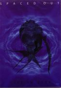

| Artist: | Spaced Out |
| Title: | Live In 2000 |
| Label: | Unicorn UNCDVD-001 |
| Length(s): | 80 minutes |
| Year(s) of release: | 2005 |
| Month of review: | [10/2007] |
| 1) | Jamosphere | 6.51 |
| 2) | Green Teeth | 5.10 |
| 3) | Toxix | 4.34 |
| 4) | A Freak Az | 6.24 |
| 5) | Delirium Tremens | 4.23 |
| 6) | Magnetyzme | 4.37 |
| 7) | The Fifth Dimension | 6.26 |
| 8) | Futurosphere | 3.28 |
| 9) | Glassosphere | 5.49 |
| 10) | For The Trees Too | 9.15 |
| 11) | Trophallaxie | 9.56 |
| 12) | Sever The Seven | 7.33 |
| 13) | Furax | 6.36 |
These guys are not your basic crowd pleasers, from a visual point of view. They are a mere quartet playing their music, often losing themselves in it. The result of this is not directly an interesting sight to anyone who does not have a specific interest in watching the actual play. I therefore fail to see the added value of the images included in a DVD.
A technical point: the cuts were put on in seperate tracks, resulting in DVD players having to relocate before every track. This doesn't exactly work for a natural flow. The disc fails in creating a live experience, the band seems to be playing in a studio-like environment on a stage without borders. The break in the applaus (of a combined three people) after every track finished any remaining attempt of creating an atmosphere off nicely. However, if you consider that the track order of the cuts is different from the running order of the full concert (don't push next on your remote, you're likely to skip tracks from the listing), as well as that in the liner notes, things start to get more clear: the authoring of the disc is pretty much atrocious. Also: your player will not show the track number.
The bonus material consists of two bios (Maheux and Fafard) plus one page of text on the making of the DVD. Nothing particularly interesting there.